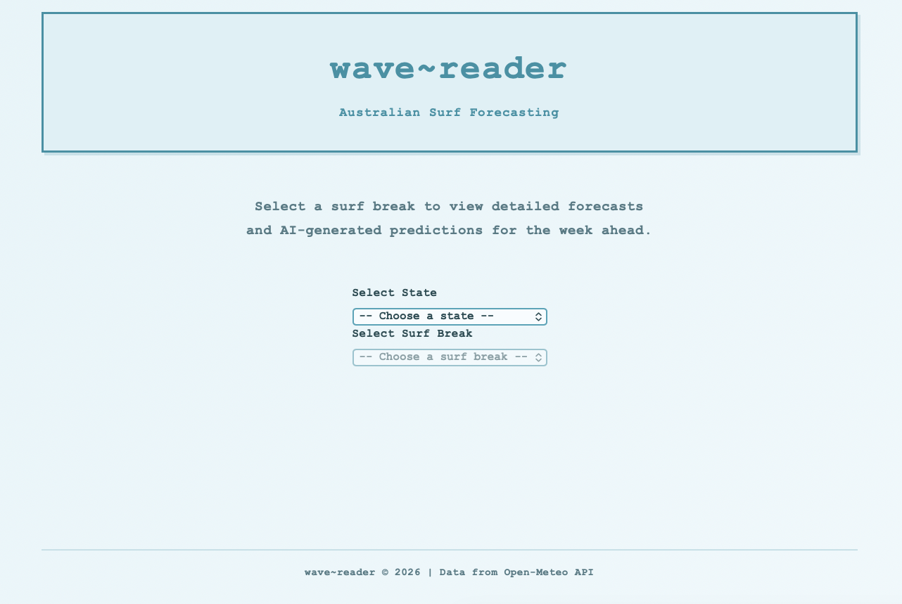
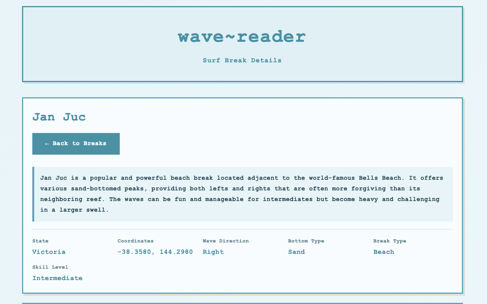
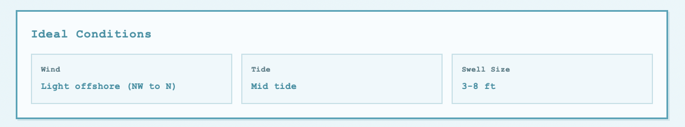
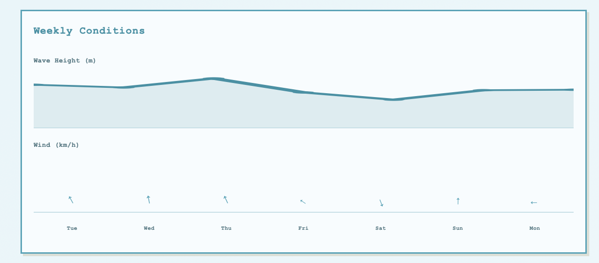
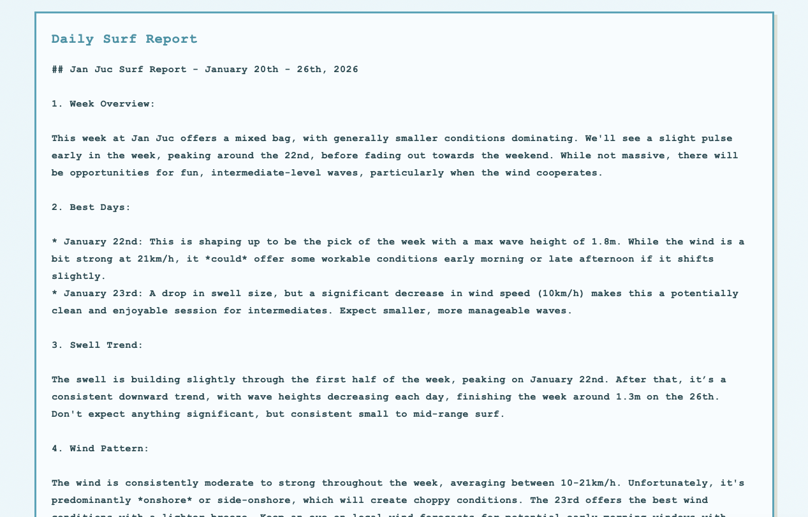

wavereader

wave~reader
A full-stack web application that delivers AI-powered surf forecasts for 50+ Australian surf breaks. This project demonstrates end-to-end engineering—from database design and API architecture to real-time data integration and generative AI implementation.
Architecture Overview
┌─────────────────────────────────────────────────────────────────┐
│ Frontend │
│ Vanilla JS • Dynamic SVG Charts • Responsive CSS │
└──────────────────────────┬──────────────────────────────────────┘
│
┌──────────────────────────▼──────────────────────────────────────┐
│ FastAPI Backend │
│ RESTful API • Jinja2 Templates • Request Orchestration │
└───────┬─────────────────────────────────────────────┬───────────┘
│ │
┌───────▼───────┐ ┌─────────────────┐ ┌─────────────▼───────────┐
│ SQLite │ │ Open-Meteo │ │ Google Gemini │
│ Database │ │ Marine API │ │ Generative AI │
└───────────────┘ └─────────────────┘ └─────────────────────────┘Full Stack Engineering
Backend (FastAPI + Python)
The backend serves as the orchestration layer, coordinating between the database, external APIs, and AI services:
- RESTful API Design: Clean endpoint structure with proper separation between data retrieval (
/api/states,/api/break/{name}) and page rendering (/{state}/{break_name}) - Async Request Handling: Concurrent fetching of marine and weather data from Open-Meteo to minimize response latency
- Template Rendering: Server-side HTML generation with Jinja2 for fast initial page loads and SEO benefits
Database Layer (SQLite)
A curated SQLite database stores detailed surf break metadata:
- Geographic coordinates for weather API queries
- Break characteristics (wave direction, bottom type, optimal conditions)
- Skill level classifications and hazard information
Frontend (Vanilla JavaScript)
Built without frameworks to keep the bundle size minimal:
- Dynamic SVG Charts: Client-side rendering of weekly wave height and wind speed visualizations
- Progressive Enhancement: Core content works without JavaScript; charts enhance the experience
- Responsive Design: Mobile-first approach with a retro monospace aesthetic
AI Engineering
Generative Forecasting with Google Gemini
The core differentiator is the AI-generated surf reports. Rather than displaying raw weather data, the application synthesizes multiple data sources into natural language forecasts:
Input Context Assembly:
Break metadata (direction, bottom, skill level)
+ 7-day marine forecast (swell height, period, direction)
+ 7-day weather forecast (wind speed, direction, precipitation)
= Structured prompt for GeminiPrompt Engineering: The system constructs prompts that include: - Break-specific characteristics that affect wave quality - Temporal context (which days look best) - Safety considerations based on skill level requirements
Output: Human-readable surf reports that interpret the data in context—explaining why Tuesday looks better than Wednesday, not just that the swell is bigger.
Key Technical Decisions
| Decision | Rationale |
|---|---|
| FastAPI over Flask | Native async support for parallel API calls |
| SQLite over PostgreSQL | Single-file deployment, sufficient for read-heavy workload |
| Vanilla JS over React | Minimal interactivity needs; faster load times |
| Server-side rendering | Better SEO, faster first contentful paint |
| Gemini over local models | Quality of natural language output; managed infrastructure |
API Endpoints
| Endpoint | Method | Description |
|---|---|---|
/api/states |
GET | Returns all states with available surf breaks |
/api/break/{name} |
GET | Full break details + weather data + AI forecast |
/{state}/{break_name} |
GET | Rendered HTML page for a specific break |



